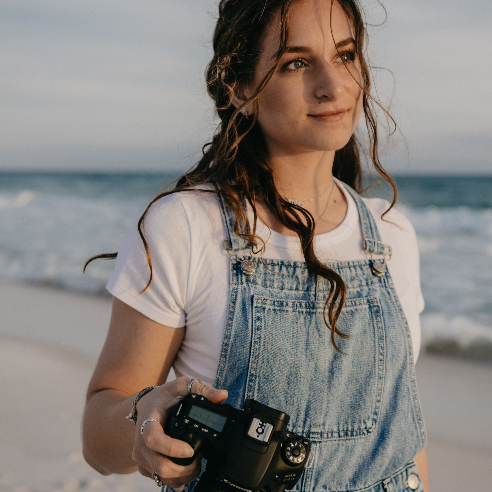

Welcome
I'm so happy you're here! My name is Nava, and I'm a photographer and digital strategist now based in Oceanside, California (previously located in FL). Basically, I love to document people's milestones, relationships, and brands, as well as help them achieve their vision!
Though based in California, you'll quickly discover that I am anything but limited to the West Coast. I love to document the places I travel and take inspiration from my surroundings, and I closely align with people and brands who share my passion for the outdoors.
Consider me a jack of all trades when it comes to photography, social media, brand management, and outdoor exploration. If you can dream it, we can do it!